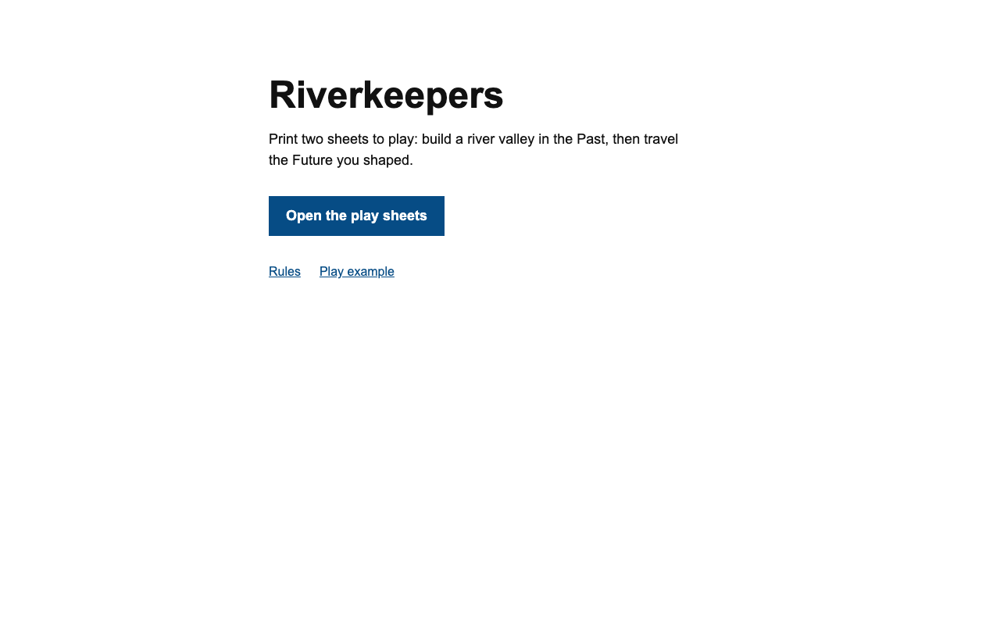

A printable solo map drawing game
Build a valley. Inherit its future.
Draw settlements, levees and bridges beside a river. Floods change what survives. If a town remains after eight turns, build roads across the map you made and see which towns you can connect.
One player · About 20–30 minutes per game · Print two sheets and start with a pencil and two six-sided dice
A short scene in your browser: choose a build, then see what the same flood does to each option. No sign-up.

The two sheets you play on
These are the actual blank map grids from the printable Past and Future sheets. Each page also has its turn log and event table.
| Row | A | B | C · bank | D · river | E · bank | F | G |
|---|---|---|---|---|---|---|---|
| 1 | |||||||
| 2 | |||||||
| 3 | |||||||
| 4 | |||||||
| 5 | |||||||
| 6 |
| Row | A | B | C · bank | D · river | E · bank | F | G |
|---|---|---|---|---|---|---|---|
| 1 | |||||||
| 2 | |||||||
| 3 | |||||||
| 4 | |||||||
| 5 | |||||||
| 6 |
One finished map
The complete 16-turn example ends with six connected Towns, a crossing, 27 points and The River United. Your rolls and placements make your own map.
| Row | A | B | C | D | E | F | G |
|---|---|---|---|---|---|---|---|
| 1 | · | T | r | ~ | · | · | · |
| 2 | r | r | · | ~ | · | T | r |
| 3 | T | r | r | OB | = | r | r |
| 4 | r | · | · | ~ | r | r | T |
| 5 | T | · | · | ~ | r | r | r |
| 6 | · | · | M | ~ | r | T | · |
A choice you can see on the map
In the Past
Place a levee by a bridge or build another settlement. A flood hits that row. The levee protects the bridge; the extra settlement gives you a town, but the bridge breaks.
In the Future
A sound bridge joins your roads across the river. A broken bridge takes two road Steps to repair. The free preview lets you make this choice and check both outcomes.
Ready to play on paper
The download contains two black-and-white, print-ready map sheets, complete English rules, and a worked 16-turn play example. Print the two pages one-sided on A4 or Letter paper at 100% scale, with browser headers and footers off; keep the rules on screen or print them too. You may print fresh copies as often as you like for your own play. No account or internet is needed after download.
Files are HTML and CSS in a ZIP, not a PDF. Open index.html in a browser and use its Print command. If you have no dice, the rules explain a paper-slip substitute.
Free preview and full game
Your Past map sets the puzzle for the Future: where you put settlements, levees and bridges changes which roads can connect your towns and how your game ends.
| What you get | Free preview | Full game · $5 |
|---|---|---|
| One meaningful Past choice and its Future consequence | Yes | Yes, within a full game |
| Play eight Past turns and up to eight Future turns on your own map | Fixed scene only | Yes; dice, floods and events can change each game |
| Reusable printable sheets, event tables, scoring and five endings | No | Included; print again for personal play |
| Complete worked play example | No | Included |
The preview answers a small question on its own: does one early choice really change the river crossing? The full game is for making and resolving your own valley.
How much control do you have?
Two dice set your row and Water or road Steps; you can choose which die plays which role unless you roll doubles. Doubles trigger an event. Your placement choices matter, but a crossing is not guaranteed. Some turns have no legal build or road and add Hardship.
There are five named endings, including The Drowned Valley: if no Town survives the Past, that game ends there with score 0. There is no separate win-or-lose rule.
Get the full Riverkeepers game
Buy once through Gumroad for $5; Gumroad delivers the ZIP for download after checkout. It contains the two printable sheets, rules and play example. No subscription. Applicable taxes are shown at checkout.
Refunds: email tnnetwork.support@icloud.com within 14 days of purchase for a refund for any reason. Refunds go to the original payment method through Gumroad; your statutory rights remain. Read the full terms.
Get release news
Optional email updates about Riverkeepers. No purchase is required. You can unsubscribe from any email.
Your address goes directly to Buttondown. If the form reports an error, correct the address and resubmit. Privacy details.